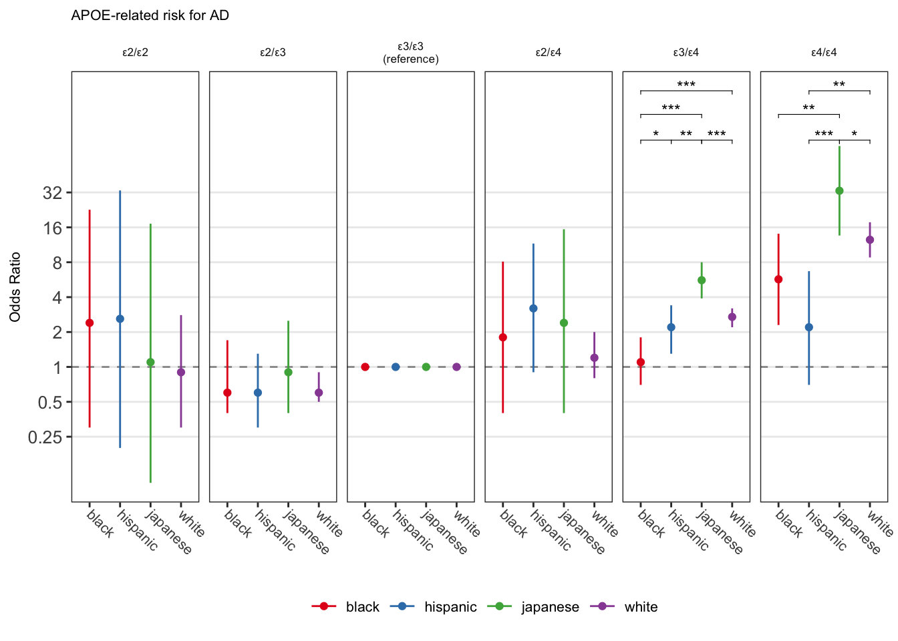
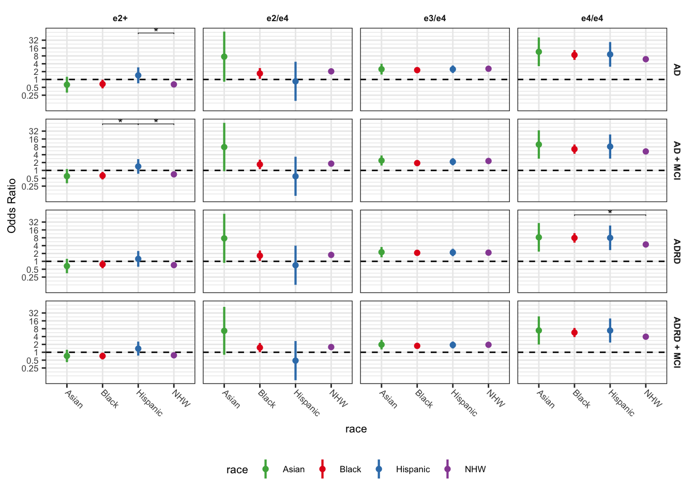

Population-specific effects of APOE in NACC
Import data
adrc.raw <- read_csv("../Resources/NACC/ADRC_all_9_16_2022.csv")
adgc.raw <- read_tsv('../Resources/NACC/ADGC_NACCIDs.txt', col_names = F) %>%
rename(NACCID = X1) %>%
mutate(adgc = T)
nacc.raw <- read_csv('../Resources/NACC/investigator_nacc58.csv')
adrc <- adrc.raw %>%
unite(apoe_geno, APOE1, APOE2, sep = '/') %>%
mutate(apoe_geno = ifelse(apoe_geno == "NA/NA", NA, apoe_geno),
gwas = ifelse(is.na(GWAS), FALSE, TRUE),
wgs = ifelse(is.na(WGS), FALSE, TRUE)) %>%
dplyr::select(NACCID, apoe_geno, gwas, wgs) %>%
distinct()
nacc <- select(nacc.raw, NACCID, NACCADC, VISITYR, PACKET, NACCVNUM, NACCAVST,
BIRTHYR, SEX, EDUC, NACCAGE, NACCAGEB, RACE, HISPANIC, NACCNIHR,
NACCMMSE, CDRSUM,
NACCFADM, NACCFFTD, NACCOM, # Faimly Mutation
NACCADMU, NACCFTDM,
NORMCOG, NACCTMCI, DEMENTED, NACCUDSD, # Prevelant
NACCNORM, NACCMCII, NACCIDEM, # Incident
DECAGE, NACCETPR
)
farrer_apoe.raw <- read_csv("../data/Farrer1997apoex.csv")Introduction
In their 1997 study published in JAMA, Farrer and colleagues investigated the association between APOE genotype and Alzheimer’s disease (AD), and how age, sex, and ethnicity may influence this association. The study found that the APOE e4 allele was associated with an increased risk of AD in Caucasian subjects, while the e2 allele was associated with a reduced risk. Interestingly, the association between APOE e4 and AD was weaker in African Americans and Hispanics compared to Caucasians, but stronger in Japanese participants (Table 1; Figure 1).
The participants in the study were enrolled from various sources, including community/population-based studies, clinic/hospital-based studies, and autopsy/brain bank-based studies. The case patients were diagnosed with definite or probable AD, while the controls were free of neurodegenerative and neuropsychiatric illnesses. Participants with ADAD mutations or co-morbid pathology were excluded from the study. Logistic regression models were used to assess the influence of APOE, sex, and age on the odds of developing AD. Age at onset of AD among cases and age at last visit among controls were used as the age variable.
While the study reported population differences in the effect of APOE genotype on the risk of AD, no statistical analysis was conducted to formally test this. Here we used Fishzer’s Z score method (eq 1; Zhou et al 2019) to compare the reported beta coefficients and standard errors between each population to determine if they were statistically different from each other (Figure 1). This method allowed for a more rigorous analysis of the population differences in the APOE-AD association reported in the study. Additionaly, we sought to replicate the oringal findings using the National Alzheimer’s Disease Co-ordinatings Uniform Dataset.
\[ z = (β1 - β2)/sqrt(SE1^2 + SE^2) \tag{1}\]
Farrer Results
farrer_apoe <- farrer_apoe.raw %>%
mutate(
effect = glue("{or} ({lci}, {uci})"),
effect = str_replace(effect, " \\(NA, NA\\)", ""),
b = log(or),
se = (log(uci) - log(lci)) / 3.92,
reference = ifelse(or == 1, TRUE, FALSE),
apoe = fct_relevel(apoe, "e2/e2", "e2/e3", "e3/e3", "e2/e4", "e3/e4", "e4/e4"),
apoe = fct_recode(apoe, "ε2/ε2" = "e2/e2", "ε2/ε3"= "e2/e3", "ε3/ε3\n(reference)" = "e3/e3",
"ε2/ε4" = "e2/e4", "ε3/ε4" = "e3/e4", "ε4/ε4" = "e4/e4")
)| apoe | White, n = 4858 | Black, n = 474 | Hispanic, n = 528 | Japanese, n = 2313 | ||||||||||||
|---|---|---|---|---|---|---|---|---|---|---|---|---|---|---|---|---|
| Case Frq | Ctrl Frq | N | Effect | Case Frq | Ctrl Frq | N | Effect | Case Frq | Ctrl Frq | N | Effect | Case Frq | Ctrl Frq | N | Effect | |
| ε3/ε3 (reference) | 36.4 | 60.9 | 2683 | 1 | 36.2 | 50.4 | 206 | 1 | 54.4 | 67.4 | 322 | 1 | 49.1 | 75.7 | 1661 | 1 |
| ε2/ε2 | 0.2 | 0.8 | 36 | 0.9 (0.3, 2.8) | 1.7 | 0.8 | 6 | 2.4 (0.3, 22.7) | 0.4 | 0.4 | 2 | 2.6 (0.2, 33.3) | 0.3 | 0.4 | 9 | 1.1 (0.1, 17.2) |
| ε2/ε3 | 4.8 | 12.7 | 568 | 0.6 (0.5, 0.9) | 9.8 | 12.9 | 54 | 0.6 (0.4, 1.7) | 9.6 | 12.0 | 57 | 0.6 (0.3, 1.3) | 3.9 | 6.9 | 149 | 0.9 (0.4, 2.5) |
| ε2/ε4 | 2.6 | 2.6 | 152 | 1.2 (0.8, 2) | 2.1 | 2.1 | 10 | 1.8 (0.4, 8.1) | 2.3 | 0.8 | 8 | 3.2 (0.9, 11.6) | 0.9 | 0.8 | 19 | 2.4 (0.4, 15.4) |
| ε3/ε4 | 41.1 | 21.3 | 1226 | 2.7 (2.2, 3.2) | 37.9 | 31.8 | 164 | 1.1 (0.7, 1.8) | 30.7 | 17.6 | 127 | 2.2 (1.3, 3.4) | 36.9 | 15.5 | 430 | 5.6 (3.9, 8) |
| ε4/ε4 | 14.8 | 1.8 | 193 | 12.5 (8.8, 17.7) | 12.3 | 2.1 | 34 | 5.7 (2.3, 14.1) | 2.7 | 1.9 | 12 | 2.2 (0.7, 6.7) | 8.9 | 0.8 | 45 | 33.1 (13.6, 80.5) |
Farrer Fishers Z score
farrer_apoe_diff <- farrer_apoe %>%
select(race, apoe, b, se) %>%
pivot_wider(
id_cols = apoe, names_from = race, values_from = c(b, se)
) %>%
mutate(
# White vs Black
diff_nhw_bla = fzscore(b_white, b_black, se_white, se_black),
p_diff_nhw_bla = 2*pnorm(q=abs(diff_nhw_bla), lower.tail=FALSE),
# White vs Hispanic
diff_nhw_his = fzscore(b_white, b_hispanic, se_white, se_hispanic),
p_diff_nhw_his = 2*pnorm(q=abs(diff_nhw_his), lower.tail=FALSE),
# White vs Japanese
diff_nhw_jpa = fzscore(b_white, b_japanese, se_white, se_japanese),
p_diff_nhw_jpa = 2*pnorm(q=abs(diff_nhw_jpa), lower.tail=FALSE),
# Black vs Hispanic
diff_bla_his = fzscore(b_black, b_hispanic, se_black, se_hispanic),
p_diff_bla_his = 2*pnorm(q=abs(diff_bla_his), lower.tail=FALSE),
# Black vs Japanese
diff_bla_jpa = fzscore(b_black, b_japanese, se_black, se_japanese),
p_diff_bla_jpa = 2*pnorm(q=abs(diff_bla_jpa), lower.tail=FALSE),
# Hispanic vs Japanese
diff_his_jpa = fzscore(b_hispanic, b_japanese, se_hispanic, se_japanese),
p_diff_his_jpa = 2*pnorm(q=abs(diff_his_jpa), lower.tail=FALSE)
) %>%
select(apoe, starts_with(c('diff', 'p_diff')))
farrer_apoe_diff_long <- full_join(
farrer_apoe_diff %>%
select(apoe, starts_with('diff')) %>%
pivot_longer(
cols = starts_with('diff'),
names_to = 'contrast',
values_to = 'z',
names_prefix = "diff_",
),
farrer_apoe_diff %>%
select(apoe, starts_with('p_')) %>%
pivot_longer(
cols = starts_with('p_'),
names_to = 'contrast',
values_to = 'p',
names_prefix = "p_diff_",
)
) %>%
separate(contrast, sep = "_", into = c("race1", "race2")) %>%
mutate(
stars = case_when(
p > 0.05 ~ "",
between(p, 0.01, 0.05) ~ "*",
between(p, 0.001, 0.01) ~ "**",
p < 0.001 ~ "***"
)
)
## Data frame for plotting pvalues
farrer_df_pval <- filter(farrer_apoe_diff_long, p < 0.05) %>%
rename(group1 = race1, group2 = race2) %>%
mutate(y.position = c(12, 4.5, 4.5, 7.5, 4.5, 12, 4.5, 7.5, 4.5),
group1 = case_when(
group1 == "nhw" ~ "white",
group1 == "bla" ~ "black",
group1 == "jpa" ~ "japanese",
group1 == "his" ~ "hispanic"
),
group2 = case_when(
group2 == "nhw" ~ "white",
group2 == "bla" ~ "black",
group2 == "jpa" ~ "japanese",
group2 == "his" ~ "hispanic"
),
race = NA,
apoe = fct_relevel(apoe, "e2/e2", "e2/e3", "e3/e3", "e2/e4", "e3/e4", "e4/e4"),
apoe = fct_recode(apoe, "ε2/ε2" = "e2/e2", "ε2/ε3"= "e2/e3", "ε3/ε3\n(reference)" = "e3/e3",
"ε2/ε4" = "e2/e4", "ε3/ε4" = "e3/e4", "ε4/ε4" = "e4/e4")
)Using the Fisher’s z score method, we observed population-based differences in the effect of the e4 homozygous genotype on the risk of developing AD. Specifically, we found that Japansese carriers of the e4/e4 allele had a higher risk of developing AD compared to African Americans, Hispanics, and White populations. In contrast, the e4/e4 allele was associated with a lower risk of developing AD in Hispanic populations compared to White populations.
Moreover, the e3/e4 allele was found to be associated with increased odds of developing AD in Japanese populations compared to White, Black, and Hispanic populations. In contrast, the e3/e4 allele was associated with a lower risk of developing AD in Black populations compared to Hispanic and White populations.
Farrer Plot
theme.size = 8
geom.text.size = (theme.size - 2) * 0.36
farrer_apoe.p <- ggplot(farrer_apoe, aes(y = or, x = race, color = race)) +
facet_grid(cols = vars(apoe)) +
geom_hline(yintercept = 1, linetype = 2, color = 'grey60') +
geom_point(position = position_dodge(width = 0.5)) +
scale_y_continuous("Odds Ratio", trans = 'log',
breaks = c(0.25, 0.5, 1, 2, 4, 8, 16, 32),
labels = c(0.25, 0.5, 1, 2, 4, 8, 16, 32)
) +
scale_color_manual(values = c("#E41A1C", "#377EB8", "#4DAF4A", "#984EA3")) +
geom_errorbar(aes(x = race, ymin = lci, ymax = uci), position = position_dodge(width = 0.5), width = 0) +
# geom_vline(xintercept=seq(0.5, 11.5, 1),color="grey90") +
ggtitle("APOE-related risk for AD") +
theme_bw() +
theme(
text = element_text(size = theme.size),
legend.text = element_text(size = theme.size),
plot.title = element_text(size=theme.size),
axis.title.x = element_blank(),
axis.text.x = element_text(angle = 315, vjust = 0.5, hjust = 0, size=8),
axis.text.y = element_text(size=10),
legend.position = 'bottom',
strip.background = element_blank(),
panel.grid.minor.y = element_blank(),
panel.grid.major.x = element_blank(),
legend.title = element_blank(),
# panel.border = element_blank(),
) +
ggprism::add_pvalue(farrer_df_pval, bracket.nudge.y = 3, label = "{stars}", colour = 'black', tip.length = 0.01, bracket.size = 0.2)
farrer_apoe.p
Farrer Plot
ggsave("../results/figures/farrer_apoe_race.png", plot = farrer_apoe.p, width = 5, height = 4, units = 'in')NACC UDS
Wrangle NACC Data
dat_wrangle <- nacc %>%
left_join(adrc, by = 'NACCID') %>%
left_join(adgc.raw, by = 'NACCID') %>%
# left_join(nacc_mmse, by = 'NACCID') %>%
mutate(
## Missing data
NACCMMSE = ifelse(between(NACCMMSE, 0, 30), NACCMMSE, NA),
DECAGE = ifelse(DECAGE %in% c(888, 999), NA, DECAGE),
) %>%
mutate(
apoe = case_when(
apoe_geno %in% c("E2/E2", "E2/E3", "E3/E2") ~ "e2+",
apoe_geno %in% c("E3/E3") ~ "e3/e3",
apoe_geno %in% c("E3/E4", "E2/E4", "E4/E2", "E4/E3", "E4/E4") ~ "e4+",
TRUE ~ NA_character_
),
apoe = fct_relevel(apoe, "e3/e3"),
apoe4 = case_when(
apoe_geno %in% c("E2/E2", "E2/E3", "E3/E2", "E3/E3") ~ "e4-",
apoe_geno %in% c("E3/E4", "E2/E4", "E4/E2", "E4/E3", "E4/E4") ~ "e4+",
TRUE ~ NA_character_
),
apoe4 = fct_relevel(apoe4, "e4-"),
apoe_geno = case_when(
# apoe_geno %in% c("E2/E2") ~ "e2/e2",
# apoe_geno %in% c("E2/E3", "E3/E2") ~ "e2/e3",
apoe_geno %in% c("E2/E3", "E3/E2", "E2/E2") ~ "e2+",
apoe_geno %in% c("E3/E3") ~ "e3/e3",
apoe_geno %in% c("E2/E4", "E4/E2") ~ "e2/e4",
apoe_geno %in% c("E3/E4", "E4/E3") ~ "e3/e4",
apoe_geno %in% c("E4/E4") ~ "e4/e4",
TRUE ~ NA_character_
),
# apoe_geno = fct_relevel(apoe_geno, 'e3/e3', 'e2/e2', 'e2/e3', 'e2/e4', 'e3/e4', 'e4/e4'),
apoe_geno = fct_relevel(apoe_geno, 'e3/e3', 'e2+', 'e2/e4', 'e3/e4', 'e4/e4'),
race = case_when(
NACCNIHR == 1 & HISPANIC == 0 ~ "NHW",
NACCNIHR == 1 & HISPANIC == 1 ~ "Hispanic",
NACCNIHR == 2 ~ "Black",
NACCNIHR == 5 ~ "Asian",
TRUE ~ NA_character_
),
race = fct_relevel(race, 'NHW'),
) %>%
# filter(NACCVNUM == 1) %>%
## Retain only information from last visit
filter(NACCETPR %nin% c(99)) %>%
group_by(NACCID) %>%
filter(NACCVNUM == which.max(NACCVNUM)) %>%
ungroup() %>%
## Age of Onset, for diagnosis, age at which symptoms began, for controls, age at last examination.
mutate(
aoo = case_when(
NACCETPR %in% c(1:30) ~ DECAGE,
NACCETPR == 88 ~ NACCAGE,
TRUE ~ NA_real_
),
dx = ifelse(NACCUDSD %in% c(3,4), 1, 0),
incident_ci = case_when(
NACCIDEM == 1 ~ 'AD',
NACCNORM == 1 ~ 'CN',
NACCMCII == 1 ~ 'MCI',
TRUE ~ NA_character_
),
race = fct_drop(race),
two_visits = ifelse(NACCAVST >= 2, TRUE, FALSE)
) We conducted a replication study of the findings reported in Farrer et al 1997, using data from the National Alzheimer’s Coordinating Center’s Uniform Dataset (NACC UDS). The dataset included 43780 participants at last visit, including participants reported as NLW (n = 32,321), Black (n = 5,470), Latinx (n = 2,308), Asian (n = 1,173), or other (n = 2,508) race/ethnicity.
Exclusion & Inclusion Criteria
exclude_age <- sum(dat_wrangle$NACCAGE < 55)
exclude_race <- sum(dat_wrangle$NACCNIHR %nin% c(1,2,5))
exclude_ADMU <- sum(dat_wrangle$NACCADMU == 1)
exclude_FTDMU <- sum(dat_wrangle$NACCFTDM == 1)
exclude_CI_wo_mci <- sum(dat_wrangle$NACCUDSD == 2)
exclude_dx <- sum(dat_wrangle$NACCETPR %nin% c(1, 2, 6, 7, 8, 88))
exclude_apoe <- sum(is.na(dat_wrangle$apoe))
exclude_aoo <- sum(is.na(dat_wrangle$aoo))
dat <- dat_wrangle %>%
filter(NACCAGE >= 55) %>%
filter(NACCNIHR %in% c(1,2,5)) %>%
filter(NACCADMU == 0) %>%
filter(NACCFTDM == 0) %>%
filter(NACCETPR %in% c(1, 2, 6, 7, 8, 88)) %>%
# filter(NACCETPR %in% c(1, 88)) %>%
filter(NACCUDSD %nin% c(2)) %>%
# filter(NACCUDSD %nin% c(3)) %>%
filter(!is.na(race)) %>%
filter(!is.na(apoe)) %>%
filter(!is.na(aoo))Participants who met any of the following exclusion criteria were not included in the analysis:
- Age < 55: 1739
- American Indian or Alaska Native, Multiracial, uknown: 2382
- Dominantly inherited AD mutation: 112
- Dominantly inherited FTD mutation: 179
- Cognitive impairment not due to MCI: 1584
- Primary diagnosis is not ADRD:3694
- Missing APOE genotype:19719
- Missing age of onset: 1241
Table 1
dat %>%
dplyr::select(race, SEX, NACCAGE, aoo, apoe_geno, EDUC, CDRSUM, NACCUDSD, NACCETPR) %>%
mutate(
NACCUDSD = fct_recode(as.factor(NACCUDSD), 'CU' = '1', "MCI" = "3", "ADRD" = "4"),
NACCETPR = fct_recode(as.factor(NACCETPR), 'CU' = '88', "AD" = "1", "LBD" = "2", "FTLD" = '6', "FTLD" = '7', 'VCID' = '8'),
NACCETPR = fct_relevel(NACCETPR),
SEX = as.factor(SEX),
SEX = fct_recode(SEX, 'Male' = '1', "Female" = "2")
) %>%
tbl_summary(by = race,
statistic = list(all_continuous() ~ "{mean} ({sd})")) %>%
add_n() | Characteristic | N | NHW, N = 15,9501 | Asian, N = 5711 | Black, N = 2,1971 | Hispanic, N = 9231 |
|---|---|---|---|---|---|
| SEX | 19,641 | ||||
| Male | 7,298 (46%) | 231 (40%) | 581 (26%) | 313 (34%) | |
| Female | 8,652 (54%) | 340 (60%) | 1,616 (74%) | 610 (66%) | |
| NACCAGE | 19,641 | 77 (10) | 75 (10) | 76 (9) | 76 (9) |
| aoo | 19,641 | 73 (10) | 71 (9) | 74 (9) | 72 (9) |
| apoe_geno | 19,641 | ||||
| e3/e3 | 7,894 (49%) | 346 (61%) | 892 (41%) | 550 (60%) | |
| e2+ | 1,371 (8.6%) | 64 (11%) | 272 (12%) | 47 (5.1%) | |
| e2/e4 | 376 (2.4%) | 8 (1.4%) | 109 (5.0%) | 6 (0.7%) | |
| e3/e4 | 5,135 (32%) | 130 (23%) | 755 (34%) | 283 (31%) | |
| e4/e4 | 1,174 (7.4%) | 23 (4.0%) | 169 (7.7%) | 37 (4.0%) | |
| EDUC | 19,641 | 16.48 (7.26) | 17.77 (12.92) | 14.62 (6.06) | 13.07 (8.54) |
| CDRSUM | 19,641 | 4.7 (5.9) | 3.6 (4.9) | 3.3 (5.2) | 4.6 (5.9) |
| NACCUDSD | 19,641 | ||||
| CU | 6,604 (41%) | 263 (46%) | 1,208 (55%) | 384 (42%) | |
| MCI | 2,009 (13%) | 92 (16%) | 292 (13%) | 155 (17%) | |
| ADRD | 7,337 (46%) | 216 (38%) | 697 (32%) | 384 (42%) | |
| NACCETPR | 19,641 | ||||
| AD | 7,271 (46%) | 238 (42%) | 835 (38%) | 458 (50%) | |
| LBD | 692 (4.3%) | 14 (2.5%) | 31 (1.4%) | 22 (2.4%) | |
| FTLD | 1,014 (6.4%) | 24 (4.2%) | 14 (0.6%) | 20 (2.2%) | |
| VCID | 369 (2.3%) | 32 (5.6%) | 109 (5.0%) | 39 (4.2%) | |
| CU | 6,604 (41%) | 263 (46%) | 1,208 (55%) | 384 (42%) | |
| 1 n (%); Mean (SD) | |||||
Stratified models
Logistic regression models were used to examine the effect of APOE genotype on ADRD, stratified by reported race/ethnicity and adjusted for age and sex. In addition to examining the association between APOE genotype and ADRD in different racial/ethnic groups, we used Fisher’s z score method to formally test whether the effect sizes of APOE on ADRD differed across racial/ethnic groups. We compared the reported beta coefficients and standard errors for APOE in each racial/ethnic group to determine if they were statistically different from each other. Age at onset of ADRD among cases and age at last visit among controls was used as the age variable. The following outcomes were examined:
- Cognitivly impaired (MCI and dementia) due ADRD vs controls
- Dementia due to ADRD vs controls
- Cognitivly impaired (MCI and AD) due AD vs controls
- Dementia due to AD vs controls
Regression Models
mod_fit <- function(data){
glm(dx ~ apoe_geno + SEX + aoo, data = data, family = 'binomial')
}
res <- bind_rows(
dat %>%
group_by(race) %>%
nest() %>%
mutate(
outcome = "ADRD + MCI",
res = map(data, mod_fit),
) %>%
select(-data),
dat %>%
filter(NACCUDSD %nin% c(3)) %>%
group_by(race) %>%
nest() %>%
mutate(
outcome = "ADRD",
res = map(data, mod_fit),
) %>%
select(-data),
dat %>%
filter(NACCETPR %in% c(1, 88)) %>%
group_by(race) %>%
nest() %>%
mutate(
outcome = "AD + MCI",
res = map(data, mod_fit),
) %>%
select(-data),
dat %>%
filter(NACCETPR %in% c(1, 88)) %>%
filter(NACCUDSD %nin% c(3)) %>%
group_by(race) %>%
nest() %>%
mutate(
outcome = "AD",
res = map(data, mod_fit),
) %>%
select(-data),
) %>%
mutate(
fit = map(res, glance),
df = map(res, tidy),
)
apoe_geno_res <- res %>%
select(race, outcome, df) %>%
unnest(cols = df) %>%
ungroup() %>%
filter(str_detect(term, 'apoe')) %>%
mutate(
lci = estimate - (std.error * 1.96),
hci = estimate + (std.error * 1.96),
or = exp(estimate),
or_lci = exp(lci),
or_hci = exp(hci),
term = str_replace(term, "apoe_geno", ""),
term = fct_relevel(term, 'e3/e3', 'e2+', 'e2/e4', 'e3/e4', 'e4/e4'),
)In our analysis of the NACC UDS dataset, we found significant associations between APOE genotype and risk of Alzheimer’s disease across different racial and ethnic populations. Specifically, we observed that the e3/e4 allele was consistently associated with increased risk of AD across all four populations studied. The e2/e4 allele, on the other hand, was found to be associated with increased risk in all populations except for Hispanics. Finally, we observed that carriers of the e2+ allele had a lower risk of AD only in non-Hispanic White and Black populations.
| term | effect | p.value | |
|---|---|---|---|
| ADRD + MCI | |||
| NHW | e2+ | 0.77 (0.68, 0.86) | 1.53 × 10−5 |
| NHW | e2/e4 | 1.6 (1.3, 2) | 3.50 × 10−5 |
| NHW | e3/e4 | 1.9 (1.8, 2.1) | 6.12 × 10−65 |
| NHW | e4/e4 | 3.9 (3.3, 4.7) | 2.02 × 10−57 |
| Asian | e2+ | 0.72 (0.42, 1.2) | 0.246 |
| Asian | e2/e4 | 6.6 (0.8, 55) | 0.079 |
| Asian | e3/e4 | 2 (1.3, 3) | 0.002 |
| Asian | e4/e4 | 6.9 (2, 24) | 0.002 |
| Black | e2+ | 0.72 (0.54, 0.97) | 0.029 |
| Black | e2/e4 | 1.5 (1, 2.3) | 0.045 |
| Black | e3/e4 | 1.8 (1.4, 2.1) | 2.32 × 10−8 |
| Black | e4/e4 | 5.7 (3.8, 8.5) | 1.08 × 10−17 |
| Hispanic | e2+ | 1.4 (0.75, 2.6) | 0.304 |
| Hispanic | e2/e4 | 0.48 (0.085, 2.7) | 0.404 |
| Hispanic | e3/e4 | 1.9 (1.4, 2.6) | 3.49 × 10−5 |
| Hispanic | e4/e4 | 6.8 (2.4, 20) | 3.89 × 10−4 |
| ADRD | |||
| NHW | e2+ | 0.72 (0.63, 0.82) | 1.55 × 10−6 |
| NHW | e2/e4 | 1.8 (1.4, 2.2) | 1.43 × 10−6 |
| NHW | e3/e4 | 2.2 (2, 2.3) | 4.35 × 10−77 |
| NHW | e4/e4 | 4.4 (3.7, 5.3) | 3.23 × 10−64 |
| Asian | e2+ | 0.66 (0.35, 1.2) | 0.203 |
| Asian | e2/e4 | 7.6 (0.88, 67) | 0.066 |
| Asian | e3/e4 | 2.3 (1.4, 3.5) | 4.64 × 10−4 |
| Asian | e4/e4 | 8.3 (2.4, 29) | 9.76 × 10−4 |
| Black | e2+ | 0.77 (0.54, 1.1) | 0.134 |
| Black | e2/e4 | 1.6 (1, 2.6) | 0.032 |
| Black | e3/e4 | 2.1 (1.7, 2.7) | 5.30 × 10−11 |
| Black | e4/e4 | 7.9 (5.2, 12) | 2.27 × 10−22 |
| Hispanic | e2+ | 1.2 (0.62, 2.5) | 0.539 |
| Hispanic | e2/e4 | 0.71 (0.13, 4) | 0.697 |
| Hispanic | e3/e4 | 2.2 (1.6, 3) | 2.40 × 10−6 |
| Hispanic | e4/e4 | 8 (2.7, 24) | 1.72 × 10−4 |
| AD + MCI | |||
| NHW | e2+ | 0.71 (0.62, 0.81) | 3.83 × 10−7 |
| NHW | e2/e4 | 1.8 (1.5, 2.3) | 2.04 × 10−7 |
| NHW | e3/e4 | 2.3 (2.1, 2.5) | 1.71 × 10−93 |
| NHW | e4/e4 | 5.3 (4.5, 6.3) | 1.38 × 10−82 |
| Asian | e2+ | 0.6 (0.32, 1.1) | 0.116 |
| Asian | e2/e4 | 7.9 (0.93, 66) | 0.058 |
| Asian | e3/e4 | 2.4 (1.5, 3.7) | 1.18 × 10−4 |
| Asian | e4/e4 | 9.8 (2.8, 34) | 3.38 × 10−4 |
| Hispanic | e2+ | 1.4 (0.75, 2.7) | 0.284 |
| Hispanic | e2/e4 | 0.6 (0.11, 3.3) | 0.556 |
| Hispanic | e3/e4 | 2.1 (1.6, 2.9) | 1.74 × 10−6 |
| Hispanic | e4/e4 | 8.2 (2.8, 24) | 1.06 × 10−4 |
| Black | e2+ | 0.63 (0.45, 0.88) | 0.006 |
| Black | e2/e4 | 1.7 (1.1, 2.6) | 0.013 |
| Black | e3/e4 | 1.9 (1.5, 2.4) | 1.32 × 10−9 |
| Black | e4/e4 | 6.5 (4.4, 9.8) | 1.62 × 10−19 |
| AD | |||
| NHW | e2+ | 0.65 (0.56, 0.76) | 3.50 × 10−8 |
| NHW | e2/e4 | 2 (1.6, 2.6) | 3.83 × 10−9 |
| NHW | e3/e4 | 2.6 (2.4, 2.8) | 1.30 × 10−106 |
| NHW | e4/e4 | 6 (5, 7.1) | 4.58 × 10−90 |
| Asian | e2+ | 0.63 (0.31, 1.3) | 0.197 |
| Asian | e2/e4 | 7.5 (0.82, 68) | 0.074 |
| Asian | e3/e4 | 2.5 (1.5, 4) | 1.80 × 10−4 |
| Asian | e4/e4 | 12 (3.2, 41) | 1.55 × 10−4 |
| Black | e2+ | 0.67 (0.46, 0.98) | 0.040 |
| Black | e2/e4 | 1.7 (1.1, 2.7) | 0.029 |
| Black | e3/e4 | 2.3 (1.8, 2.9) | 3.84 × 10−12 |
| Black | e4/e4 | 8.7 (5.7, 13) | 3.27 × 10−23 |
| Hispanic | e2+ | 1.4 (0.71, 2.9) | 0.309 |
| Hispanic | e2/e4 | 0.85 (0.15, 4.8) | 0.854 |
| Hispanic | e3/e4 | 2.5 (1.8, 3.4) | 1.12 × 10−7 |
| Hispanic | e4/e4 | 9.2 (3.1, 27) | 6.58 × 10−5 |
Fishers Z score
apoe_diff <- apoe_geno_res %>%
select(race, outcome, term, b = estimate, se = std.error) %>%
pivot_wider(names_from = race, values_from = c(b, se)) %>%
mutate(.,
## Black vs NHW
diff_nhw_bla = fzscore(b_NHW, b_Black, se_NHW, se_Black),
p_diff_nhw_bla = 2*pnorm(q=abs(diff_nhw_bla), lower.tail=FALSE),
# NHW vs Hispanic
diff_nhw_his = fzscore(b_NHW, b_Hispanic, se_NHW, se_Hispanic),
p_diff_nhw_his = 2*pnorm(q=abs(diff_nhw_his), lower.tail=FALSE),
# NHW vs Asian
diff_nhw_asi = fzscore(b_NHW, b_Asian, se_NHW, se_Asian),
p_diff_nhw_asi = 2*pnorm(q=abs(diff_nhw_asi), lower.tail=FALSE),
# Black vs Hispanic
diff_bla_his = fzscore(b_Black, b_Hispanic, se_Black, se_Hispanic),
p_diff_bla_his = 2*pnorm(q=abs(diff_bla_his), lower.tail=FALSE),
# Black vs Asian
diff_bla_asi = fzscore(b_Black, b_Asian, se_Black, se_Asian),
p_diff_bla_asi = 2*pnorm(q=abs(diff_bla_asi), lower.tail=FALSE),
# Hispanic vs Asian
diff_his_asi = fzscore(b_Hispanic, b_Asian, se_Hispanic, se_Asian),
p_diff_his_asi = 2*pnorm(q=abs(diff_his_asi), lower.tail=FALSE)
)
apoe_diff_long <- full_join(
apoe_diff %>%
select(term, outcome, starts_with('diff')) %>%
pivot_longer(
cols = starts_with('diff'),
names_to = 'contrast',
values_to = 'z',
names_prefix = "diff_",
),
apoe_diff %>%
select(term, outcome, starts_with('p_')) %>%
pivot_longer(
cols = starts_with('p_'),
names_to = 'contrast',
values_to = 'p',
names_prefix = "p_diff_",
)
) %>%
separate(contrast, sep = "_", into = c("race1", "race2")) %>%
mutate(
stars = case_when(
p > 0.05 ~ "",
between(p, 0.01, 0.05) ~ "*",
between(p, 0.001, 0.01) ~ "**",
p < 0.001 ~ "***"
)
)
df_pval <- filter(apoe_diff_long, p < 0.05) %>%
rename(group1 = race1, group2 = race2) %>%
mutate(y.position = c(3, 3, 3, 3),
group1 = case_when(
group1 == "nhw" ~ "NHW",
group1 == "bla" ~ "Black",
group1 == "jpa" ~ "Asian",
group1 == "his" ~ "Hispanic"
),
group2 = case_when(
group2 == "nhw" ~ "NHW",
group2 == "bla" ~ "Black",
group2 == "jpa" ~ "Asian",
group2 == "his" ~ "Hispanic"
),
race = NA,
)There was limited evidence of population-specific effects of APOE geneotype on AD risk was observed in the NACC UDS. The e2+ allele was associated with lower risk in NHW and Black populations in comparison to Hispanics, while the e4/e4 allele was associated with higher risk in Black populations compared to NHW.
NACC Plot
apoe_geno_res_p <- apoe_geno_res %>%
mutate(race = fct_relevel(race, 'Asian', 'Black', 'Hispanic', 'NHW')) %>%
ggplot(., aes(x = race, y = or, color = race)) +
facet_grid(cols = vars(term), rows = vars(outcome)) +
geom_hline(yintercept = 1, linetype = 2) +
geom_point() +
geom_linerange(aes(ymin = or_lci, ymax = or_hci), linewidth = 0.75) +
scale_y_continuous("Odds Ratio", trans = 'log',
breaks = c(0.25, 0.5, 1, 2, 4, 8, 16, 32),
labels = c(0.25, 0.5, 1, 2, 4, 8, 16, 32)
) +
scale_color_manual(values = c( "#4DAF4A", "#E41A1C", "#377EB8", "#984EA3")) +
theme_bw() +
theme(
text = element_text(size = theme.size),
axis.text.x = element_text(angle = 315, vjust = 0.5, hjust=0),
legend.position = "bottom",
strip.background = element_blank(),
strip.text = element_text(face = 'bold')
) +
ggprism::add_pvalue(df_pval, bracket.nudge.y = 3, label = "{stars}", colour = 'black', tip.length = 0.01, bracket.size = 0.2)
apoe_geno_res_p
NACC Plot
ggsave("../results/figures/nacc_apoe_race.png", plot = apoe_geno_res_p, width = 6, height = 6, units = 'in')